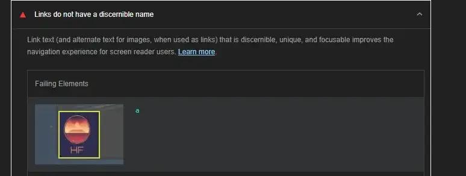
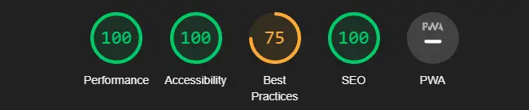

Analyse av denne nettsiden
Jeg har brukt Lighthouse fra Google for å analysere denne nettsiden.

Over er et bilde av første lighthouse analysen av hjemmesiden. Nettsiden fikk veldig bra score, men det var noen ting som kunne forbedres.

Nettsiden lastet inn saktere fordi bildene på nettsiden var i PNG og JPEG format. Jeg konverterte alle bildene på nettsiden til WebP for å løse dette problemet.
Noen av bildene på nettsiden manglet alt tekst som gjore at acessibility scoren på nettsiden ble lavere. For å fikse dette laget jeg alt tekst på alle bildene på nettsiden.
Jeg har også gjort noen andre små endringer for å få bedre score. Jeg satte faste størrelser på bilder for bedre preformence. Logoen er mindre, men bedre kvalitet på bilde. Best practices scoren min har gått ned, fordi jeg ikke hadde lagt til delings knappene på siden da jeg gjorde den første analysen på nettsiden. Disse bruker en API som lighthouse ikke liker så scoren går ned. Dette får jeg ikke fikset hvis kanppene skal funke så jeg valgte å få en lavre best practices score. Bilde under viser analyse scoren etter endringene.
Her er en link til nettsidens Tilgjengelighetserklæring.